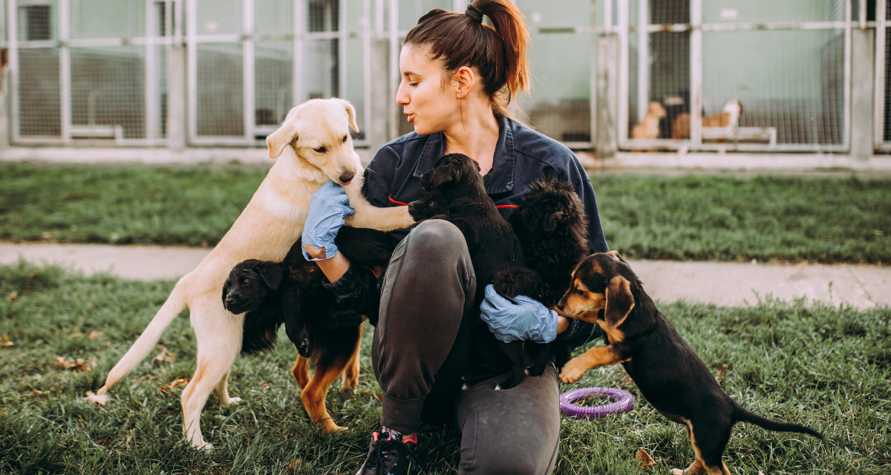

Welcome to Sunshine Animal Sanctuary!
At Sunshine Animal Sanctuary, we are more than just a shelter — we are a family dedicated to rescuing, rehabilitating, and rehoming animals in need. Since our founding, we've created countless success stories and happy endings, one paw at a time.
We believe every animal deserves a second chance at life. From scared strays to surrendered pets, we offer them a safe, loving environment and work tirelessly to match them with forever homes. Our mission is powered by a compassionate community and devoted volunteers.
Explore our site to meet adoptable pets, learn how to get involved, or discover the many ways you can support our sanctuary. Whether you're looking to donate, volunteer, or adopt — there’s a way for everyone to make a difference.
